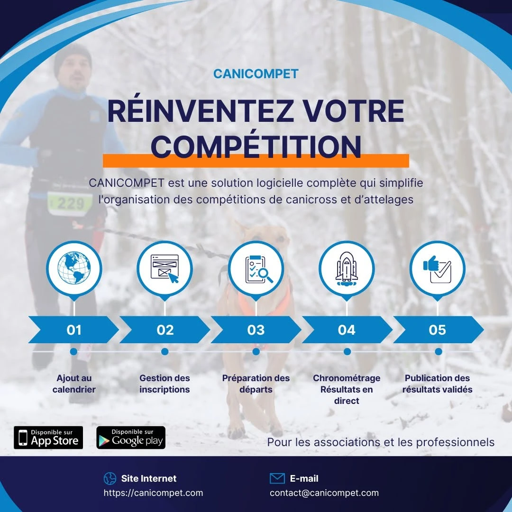

Canicompet
La plateforme de gestion des compétitions de canicross : inscriptions, paiements, documents et listes de départ, gérés par les clubs en autonomie.
20 000+ utilisateurs
L'impact
En 2015, les organisateurs de canicross en France géraient encore les inscriptions par courrier papier et par chèque. J'ai alors créé Canicompet : en quelques années, la plateforme est devenue le leader en France et a permis aux organisations de passer à l'échelle, alors que le nombre d'inscrits aux compétitions augmentait chaque saison.
AvantCourrier papier & chèques
AprèsTout en ligne, automatisé
Automatisé